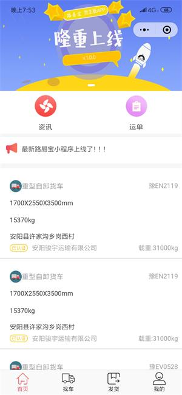
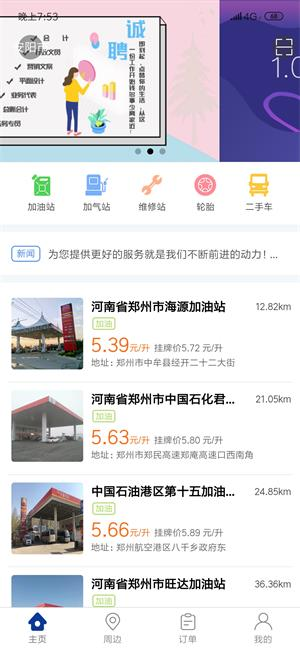
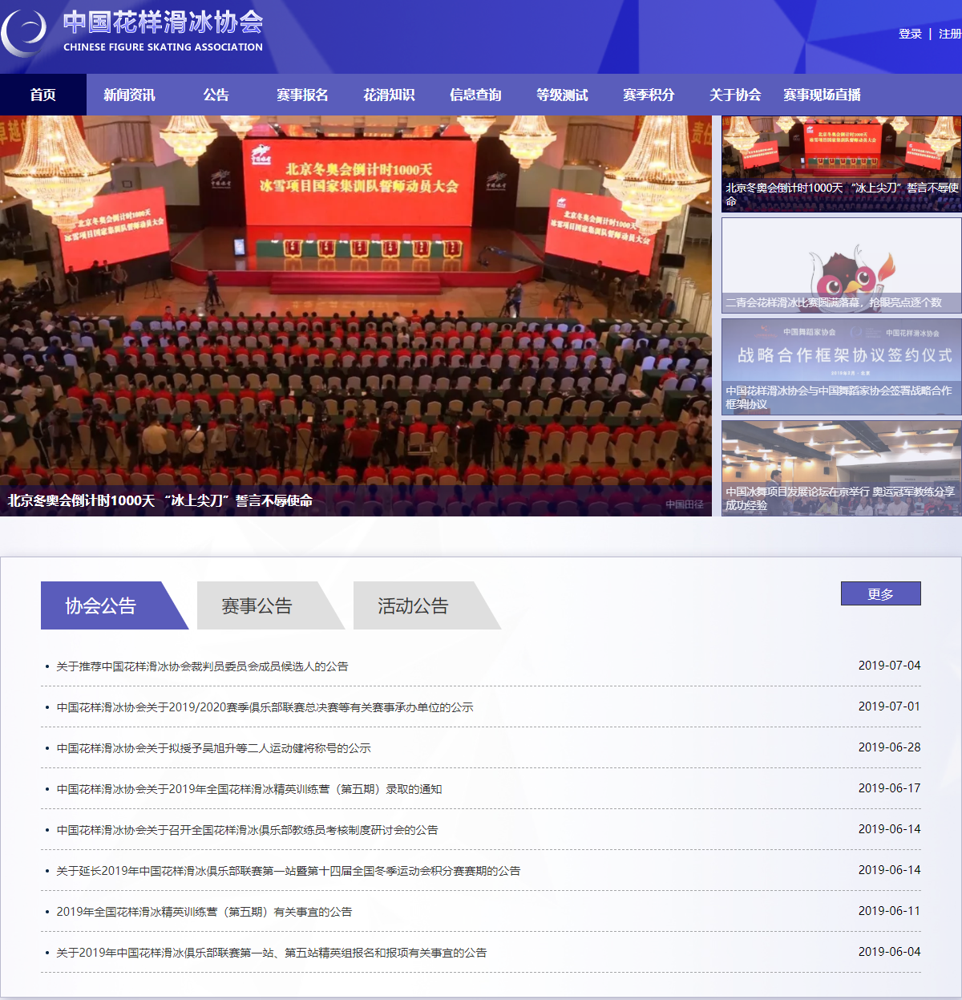

张林康的简历
基本信息
- 名字：张林康
- 性别：男
- 毕业院校：商丘工学院
- 毕业时间：2018年7月
- 简书：www.jianshu.com/u/fff41bd49644
- GitHub：github.com/ZhangLinkang
联系方式
- 电话：17329309302
- 邮箱：fisherapp1995@sina.com
- 微信：fisherapp1995
- QQ：1287838886
应聘岗位
前端研发工程师
项目与工作经验
 北京明璐网络科技公司（2018.9—至今）
北京明璐网络科技公司（2018.9—至今）
-
路易宝货主（APP&&微信小程序）
技术应用：Vue.js / mpvue / uni-app
项目简介：项目主要为发布货源信息，服务于中国的道路运输行业
项目部分功能：轮播图、滚动新闻、下拉刷新、上拉加载更多、数据筛选、定位、支付、懒加载
项目主要使用DCloud发行的uni-app开发框架，使用Vue.js开发出能够在IOS、Android、小程序平台运行的应用
使用ES6、ES7语法进行开发，代码结构接口更加清晰，维护性更高
前后台分离，请求头携带验证信息，完成ajax异步请求数据
调用手机原生应用，支付宝、微信支付、地图导航等功能
封装项目js工具库以及项目组件UI库
持续优化相关产品的质量、性能、用户体验、构建更符佳人性化的应用

-
交通宝（APP）
技术应用：Vue.js / mpvue / uni-app
项目简介：主要服务于加油站、加气站，帮助司机完成汽车一次车辆充能和省钱的一款应用
项目部分功能：轮播图、滚动新闻、下拉刷新、上拉加载更多、数据筛选、定位、地图导航、支付、canvas二维码生成、扫码、懒加载

重庆电政信息科技有限公司（2017.09—2018.09）
-
数据共享交换平台
技术应用：HTML / CSS / Query / layUI / ECharts / ART-TEMPLATE
项目简介：数据交换共享平台主要提供数据建模资源目录管理、数据采集、数据质量管理、数据交换共享功能
项目自动化环境的构建及框架、第三库的挑选工作
使用Echarts绘制出饼图、折线图、拓扑图等
使用JQuery实现SPA单页面应用
JQuery插件的制作及二次封装
-
云计算机管理平台
技术应用：HTML / CSS / Query / layUI / ECharts / ART-TEMPLATE
项目简介：项目为后台管理项目，类似于宝塔服务器管理系统
-
政务内部项目
项目简介：该项目系统为单位内部审批事件项目
技术应用：HTML / CSS / Query / layUI / ECharts / ART-TEMPLATE
静态页面HTML+CSS页面制作，使用ajax实现动态数据交互
复杂表单数据校验功能
前台处理数据和排序，减少对服务器的请求次数
各种版本浏览器内核兼容处理，考虑-IE8
-
中国花样滑冰协会
技术应用：HTML / CSS / Query / BootStrap / ART-TEMPLATE
项目简介：企业官方站，包括视频播放，新闻数据展示、分页等功能

个人项目
-
未来公寓酒店（Koa2 + MongoDB + Vue.js）
项目初衷：
生活中忘记带钥匙，丢钥匙的情景时常出现。自己在2019年亲身经历把钥匙弄丢在自己家门口那种内心无助复杂的心情。当时想换把密码锁，在某搜索密码锁无意看到可以二次开发的智能锁，然后就向店员了解门锁功能，然后放血买回来一把。
到后货，OK不就换个锁吗？自己把门拆了折腾了2个小时没有把锁换上，最后只好找个师傅过来给换上，告诉我，换锁很讲究的，什么锁体，开锁方向，把手方向都要正确一步出错就不行。
登录云平台设置个永久有效密码方便我个人开锁，然后对二次开发文档熟悉了一下，可以通过二次开发，实现远程开锁、临时密码开锁、时间区间临时密码开锁、信息查询等功能。
同时想到自己2018旅游民宿经历，某团找到合适的民宿，房东大半夜来接，送到小区，给钥匙，上楼，离开时藏钥匙，现在正是一把锁就可以解决这些问题，后来就想到分散式酒店系统，房间在城市多个地方，通过短信或小程序给用户显示分时段临时密码
小程序端功能：微信支付、定位、实名认证、照片上传、门锁密码动态获取、短信验证码、订单、房间查询（Vue.js / uni-app ）
管理端功能：门锁云平台对接、管理网关、管理门房、管理房间、管理订单、管理员开房、权限控制、管理注册会员(Vue.js / ElementUI)
服务器实现：门锁云平台二次接口请求、跨域、身份验证、CURD（koa2 / MongoDB）
掌握技能
前端
-
Vue.js
能够熟悉使用vue.js框架开发前端页面应用程序。组件库ElementUI、Vant ... 好像都一样
能够自己封装Vue UI组件库
-
H5+ uni-app
uni-app 是一个使用 Vue.js 开发跨平台应用的前端框架，开发者编写一套代码，可编译到iOS、Android、H5、小程序等多个平台。
-
HTML/CSS
能够编写语义化的 HTML，模块化的 CSS，完成较复杂的布局,熟练使用css3属性完成炫酷的H5动画效果
熟悉Less等CSS预处理和模块化工具
-
JavaScript
熟悉原生 Javascript，能脱离 jQuery 等类库编码
能够封装构造函数类插件及组件
JQuery周边插件，Swiper.js，Bootstrap等
-
webpack / gulp
能够自己配置项目自动化工作环境
webpack打包构建优化
后端
-
Node.js
熟悉node.js ,熟悉安装node模块。
能够使用koa写服务器程序，数据API接口
掌握Express
-
数据库
熟悉MongoDB数据库的操作
了解Mysql
其他
-
git / svn
-
小程序
能够熟悉工具类数据展示类样式类的小程序的开发，熟悉使用小程序开发调试工具，熟悉小程序开发流程及相关规则
-
Android原生开发
学习Java的时候用Android开发过2款实例应用，学习前端后 现在Java、Android忘记的差不多。如果能捡起来很快
职业规划
个人评价
-
我对自己的定位：主攻：前端方面，同时在其他方面打辅助，遇到问题，解决问题，办法总比困难多
我怎么克服问题：我的原则遇到问题，翻手册，百度，在不影响团队其它成员的情况下解决这个问题。棘手问题选择多交流
我的优势：自学能力强，主动积极，热爱生活，热爱技术，不断学习新技术，关注行业动态
职业规划
-
随着前端大趋势不断学习新的技术，后端继续锻炼Node.js水平，成为一名合格的全栈工程师。
目前在学习Dart、Flutter打造出体验更佳的应用